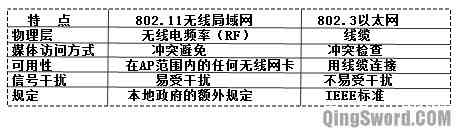
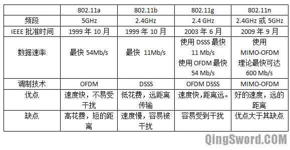

[CCNA图文笔记]-23-无线网络介绍
引言
这篇文章介绍当前可使用的不同无线标准以及每种标准的特点，无线网络中的硬件组成、部署，如何加强无线网络的安全性以及相关的安全协议和特点。
文章目录
- 0×1.无线网络介绍
- a.无线网络分类
- b.无线网络和有线网络的区别
- c.无线局域网标准
- d.无线局域网组件
- e.无线配置中的一些术语
- 0×2.无线局域网的安全
- a.无线网安全协议介绍
- b.无线网安全认证过程
0×1.无线网络介绍
a.无线网络分类
无线网络根据连接范围分有下面这几种类型：PAN（Personal Area Network，个人网）、LAN（Local Area Network，局域网）、MAN（Metropolitan Area Network，城域网）、WAN（Wide Area Network，广域网）。而现在最典型的应用就是WLAN（Wireless Local Area Network，无线局域网）。
下面这个表列出了这几种无线网络使用的标准、速度、有效范围和典型应用：

无线网络可以节约电缆降低成本，用户不必在一个固定的位置接入网络。
b.无线网络和有线网络的区别
WLAN和LAN都采用IEEE的802标准，LAN使用802.3标准，WLAN使用802.11标准，下面的列表显示了他们的区别：
无线局域网使用的是无线电频率而不是线缆，和线缆相比无线电频率有下面的特点：没有边界，数据帧可以向任何能接收无线电信号的地方发送，处在无线电频率范围内的无线网卡都可以接收到信号，在同一个区域中使用相同的无线电频率可以互相干扰。在不同国家对无线电频率有不同规定。
WLAN的客户端使用无线接入点（AP，Access Point）连接到网络，而不是以太网交换机。无线网络是一个共享网络，一个AP就像以太网中的Hub，数据使用无线电波传送。无线网络实际上采用的是半双工模式，收发是不能同时进行的，除非接收和发送使用不同的无线电频率。无线网络不同于有线网络，线缆上可以检测到有冲突信号，无线网络中只要数据发送出去就没有办法检测是否发生冲突，所以802.11采用的是CSMA中的CA（冲突避免技术。）
c.无线局域网标准
802.11无线局域网是IEEE定义的标准，在这个标准的基础上又相继推出了802.11a、802.11b、802.11g、802.11n等标准，不同的标准受一些调制技术的影响，比如DSSS（Direct Sequence Sparead Spectrum，直接序列展频技术）和OFDM（Orthogonal Frequency Division Multiplexing，正交频分复用），其中当一个标准使用OFDM时将会有更快的传输速度，DSSS比OFDM简单，相对花费较少。
下面这个列表是无线局域网的标准对比：
无线电频率的频段由国际电讯联盟无线通信部门（ITU-R）分配，指定了900MHz、2.4GHz、5GHz用于ISM（工业、医疗、科学）通信无需许可。虽然ISM频段在全球范围无需许可，但是也受当地法律限制。
d.无线局域网组件
1）无线网卡：无线网卡使客户工作站能够发送和接收射频信号，它使用调制技术将数据流编码后放到无线电频率信号上。
2）无线AP：就是一个无线接入点可以连接无线客户端到有线客户端。在本质上来说，一个AP转换空气中的802.11封装的帧格式到有线以太网上的802.3以太网帧格式。AP类似802.3以太网中的Hub，是一个共享的媒体。
3）无线路由器：无线路由器可以执行无线接入点AP、以太网交换机和路由器的角色。
e.无线配置中的一些术语
1）AP参数
模式：无线网络的模式指的是WLAN的协议，802.11a/b/g/n等。有时候无线路由器上的无线网络模式会显示一个"混合"的选项，这意味着这个选项同时支持802.11b和802.11g的标准。
SSID：即服务设置标识符(Service Set Identifier)，是一个独立的标示符，也就是我们手机或笔记本连接wifi时那个无线网络显示的名称，客户端使用SSID区分不同的无线网络。
通道：在ISM无线频段中，2.4GHz又被划分出不同的通道，北美的标准是11个通道，欧洲的标准是13个通道，CCNA以北美为准，每个通道占22MHz，相邻通道间隔为5MGHz。在实际情况中，可以让无线路由器自动选择通道，当和其他设备的通道重叠的时候，自动动态的调整通道。
2）无线局域网拓扑结构
AD hoc：也称IBSS（Independent Basic Service Set，独立基本服务集），最常用的就是我们使用带有无线网卡的笔记本建立无线临时网络（计算机到计算机的）。
BSS：基本服务集，最常见到的就是一台家用无线路由器，上面用有线链接到我们的台式机，还有几台笔记本或手机通过无线连接到这台无线路由上。
ESS：Extended Service Set，扩展服务集，也称作Infrastructure拓扑，也就是多个BSS组成的网络，网络中有多台无线AP，不同的AP有不同的SSID，用户可以根据SSID自己选择连接到哪个AP上。
Common Distribution system：共同分布式系统，就是多个AP组成的覆盖范围很广的一个区域，在这个覆盖区域中AP使用同一个SSID来允许用户漫游在多个AP之间，不同AP之间有10%-15%的范围重叠，并且不同的AP之间不使用重叠的通道。
0×2.无线局域网的安全
无线局域网是很脆弱的，这里列出一些无线网络容易受到的安全威胁：AP欺骗、Dos拒绝服务、中间人攻击、密码暴力破解、协议自身缺陷等等。
a.无线网安全协议介绍
开放式：不加密的无线AP，任何人都可以连接，非常不安全。
WEP加密：WEP（Wired Equivalent Privacy），有线等效保密，这种加密方式本身存在缺陷，可以在几分钟以内破解出使用的密钥，不推荐使用这种加密。
WPA加密：WPA（Wi-Fi Protected Access,Wi-Fi安全接入），安全性相对WEP大幅提升，只能暴力猜解，破解这种加密的条件是设置的密码刚好在破解者的破解字典里面，或通过路由缺陷pin码破解，否则无法破解。
WPA2加密：WPA的安全加强版。
b.无线网安全认证过程
在家庭无线局域网中，并没有严格的验证要求，验证是在无线接入点（AP或无线路由器）上进行的，而在一些安全要求严格的场合，需要有额外的登录和认证机制，通常是使用一台专门用来认证的服务器。用户的登录过程被EAP（Extensible Authentication Protocol，扩展验证协议）管理，IEEE使用802.1x协议对无线局域网进行认证和授权。
EAP的认证步骤如下：
1）AP上的802.11连接进程为每个无线局域网的用户创建一个虚拟接口。
2）AP阻止所有其他的数据帧，只允许802.1x协议的流量通过。
3）通过AP，802.1x的数据帧携带EAP身份验证数据包到达认证服务器，这台服务器上运行RADIUS协议，可以提供认证、授权、记账，即AAA服务。AP起到了一个中转的作用，将服务器的要求转发给无线客户端，将无线客户端的EAP应答转发给AAA服务器。
4）如果EAP验证成功，AAA服务器发送一个EAP验证成功的信息给无线接入点AP，AP就让通过验证的无线客户端的数据流通过虚拟接口。如果验证失败则关闭虚拟接口。
5）开放虚拟接口前，WLAN客户端和AP之间的数据链路被加密，以确保只有通过验证的客户端才能接入。
在这里要介绍两个无线网络设置，在个人使用中可以增加无线网络的安全性，但是这两种方法也是可以被突破的：
不广播SSID：这种方法确实可以在表面上让无线客户端搜索不到SSID，从而达到了隐藏AP的目的，但是如果被动的监听无线电频率，SSID很容易被捕获，因为SSID是明文传输的。
过滤MAC地址：这种方式在某种程度上也能很好的阻止非法MAC地址的接入，但是现在的一些软件可以很容易的改变计算机的MAC地址显示，只要捕获到其他被允许的用户的MAC，再将自己的MAC伪装成这个MAC即可突破这个限制，如果被伪造的计算机正在使用网络，会收到一个IP地址冲突的提示。
对无线网络破解有兴趣的朋友可以参考一下这篇文章：[wifi]无线路由密码破解与防范